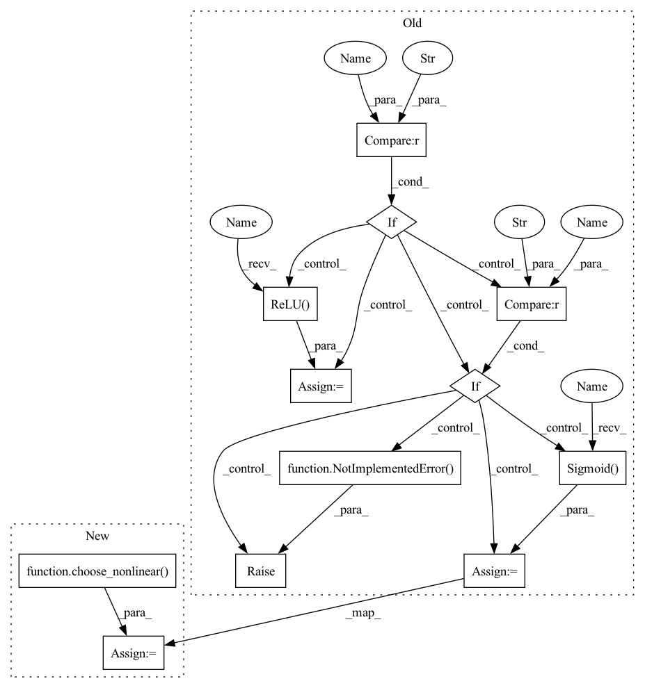

Pattern ID :1184

Before Change
self.deconv2d = nn.ConvTranspose2d(in_channels, out_channels, kernel_size=kernel_size, stride=stride, dilation=dilation)
self.batch_norm2d = nn.BatchNorm2d(out_channels)
if nonlinear == "relu":
self.nonlinear = nn.ReLU()
elif nonlinear == "sigmoid":
self.nonlinear = nn.Sigmoid()
else:
raise NotImplementedError()
def forward(self, input, skip=None):
Args:
After Change
self.deconv2d = nn.ConvTranspose2d(in_channels, out_channels, kernel_size=kernel_size, stride=stride, dilation=dilation)
self.norm2d = nn.BatchNorm2d(out_channels)
self.nonlinear = choose_nonlinear(nonlinear)
def forward(self, input, skip=None):
Args:
In pattern: SUPERPATTERN
Frequency: 3
Non-data size: 12
Instances
Fragment ID: 2386188
Project Name: tky823/dnn-based_source_separation
Commit Name: a68da2860887d1a6505a73e3735be28ad041cbb5
Time: 2021-12-04
Author: delta9guitar97@gmail.com
File Name: src/models/unet.py
Class Name: DecoderBlock2d
Method Name: __init__
Parent Class: nn.Module
Fragment ID: 2386189
Project Name: tky823/dnn-based_source_separation
Commit Name: a68da2860887d1a6505a73e3735be28ad041cbb5
Time: 2021-12-04
Author: delta9guitar97@gmail.com
File Name: src/models/unet.py
Class Name: EncoderBlock1d
Method Name: __init__
Parent Class: nn.Module
Fragment ID: 2386190
Project Name: tky823/dnn-based_source_separation
Commit Name: a68da2860887d1a6505a73e3735be28ad041cbb5
Time: 2021-12-04
Author: delta9guitar97@gmail.com
File Name: src/models/unet.py
Class Name: DecoderBlock1d
Method Name: __init__
Parent Class: nn.Module